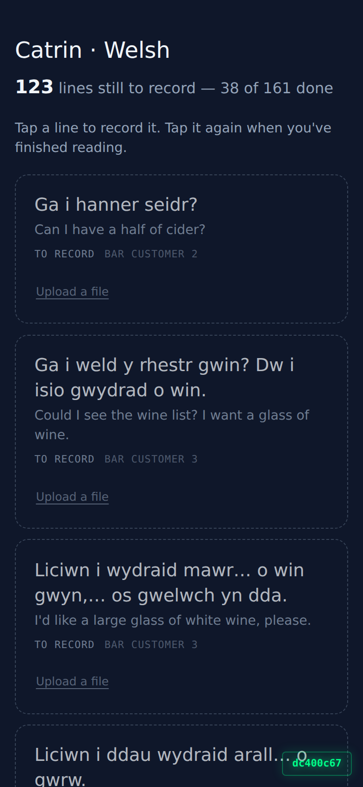
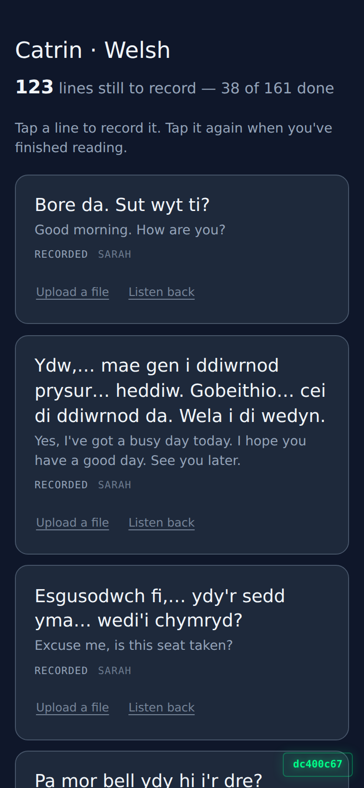
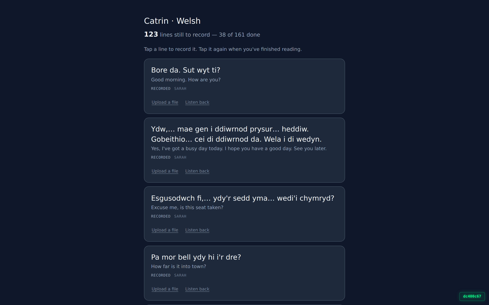

Popty · /my-recording · 2 September 2026 · branch feat/recordist-my-lines
Signed in through the real login form as a recordist cast to Catrin's voice. No auth stub. The page found the voice from the login, loaded the live Welsh queue, and drew 123 lines still to record, 38 of 161 done — the same numbers the queue API returns.

390 × 844. Every row is a dashed, dimmed outline: an empty slot with no recording in it. The Welsh line is the biggest thing on the row; everything else is furniture.

With “show the lines I've already recorded” turned on. Recorded rows are solid and filled. No tick, no badge, no red or green — the only colour on the page is the level meter while a line is being read.

1440 × 900. Nothing changes shape between the two.